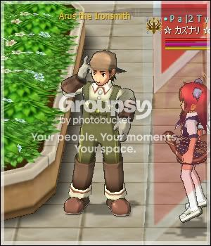

หน้า 11 จากทั้งหมด 21

โพสต์แล้ว:
พุธ 22 ส.ค. 2007 1:16 pmโดย ECO
รองเท้าของซอรทแมนเวล 35 นะครับได้จากการเปิดกล่องครับลองเข้าไปดูในเวปประจำอาชีพ swordman นะครับจะมีบอกไว้หมด
โพสต์แล้ว:
พุธ 22 ส.ค. 2007 7:54 pmโดย ECO
まつたけさま เห็ดที่ใช้ทำเควส หมวกชาวนา 55 อันนี้ รูปเป็นแบบไหนหรอครับ
อยากเห็นรูปอ่ะ ลิงค์รูปมันเสียหมดเลย
แล้วผลองุ่น หาจากไหนหรอครับ
โพสต์แล้ว:
พุธ 22 ส.ค. 2007 9:53 pmโดย ECO
KURIKURIJUNG เขียน:รองเท้าของซอรทแมนเวล 35 นะครับได้จากการเปิดกล่องครับลองเข้าไปดูในเวปประจำอาชีพ swordman นะครับจะมีบอกไว้หมด
ขอบคุณครับ ว่าแต่เว็ปไยหรอ ^^
arus
โพสต์แล้ว:
เสาร์ 25 ส.ค. 2007 4:14 pmโดย ECO
arus อยู่ไหนเดินหาไม่เจอ ในหนังสือไม่มีด้วย
arus อยู่ไหนเดินหาไม่เจอ ในหนังสือไม่มีด้วย
โพสต์แล้ว:
เสาร์ 25 ส.ค. 2007 4:17 pmโดย ECO
arus อยู่ไหนเดินหาไม่เจอ ในหนังสือไม่มีด้วย
โพสต์แล้ว:
จันทร์ 27 ส.ค. 2007 3:09 pmโดย ECO
NCP : Arus the Ironsmith

อยู่ทางทิศใต้ของอัพทาวน์ค่ะ

ทำเควสเปิดร้านขายเสื้อผ้าของสายไฟเตอร์เวล 45 หรอคะ
เมื่อวานเราก็เพิ่งไปทำมา .. อิอิ
โพสต์แล้ว:
พุธ 29 ส.ค. 2007 12:13 amโดย ECO
มีเควส
หมวกประจำอาชีพ
เวล 35 มั้ยอะคร๊า
เวนกำ
โพสต์แล้ว:
ศุกร์ 31 ส.ค. 2007 10:42 amโดย ECO
สรุป อ่าน มาล่ะ ถึงหน้าสุดท้าย
สรุป...ชุด 55 ของ สาย BP
ซื้อ ที่ ไหน ... ทำ เควส ..ยังไงเอ่ย.... ที่บอกมาอ๊ะ..เหงแต่ ชุด 45 ชุด 55
อยู๋ ตรง หน่าย """""""""" ขอบคุณ คร้าบบบบบบบ
โพสต์แล้ว:
ศุกร์ 31 ส.ค. 2007 12:34 pmโดย ECO
:oops: ต้องทำเควสยาของท่านแม่ (Poroll) 2 ครั้งค่ะ
จึงจะสามารถซื้อชุดสาย Back Packer Lv.55 จาก Poroll ได้ค่ะ
Reenei เขียน:ทำเควส"ยาของท่านแม่(Poroll)" 2 ครั้ง
- วิธีทำเควส
หากลีบดอกไม้ 6 สีซึ่งดรอปจากดอกไม้ทั้ง 6 ธาตุ
*ต้องให้ชาวนาที่มีสกิลปราชญ์ต้นไม้เป็นคนตี กลีบสีถึงดรอป
- ดอกไม้เหล่านั้นหาได้ที่
สีแดง - ทะเลทหาย Steap (ทางเข้า Interior Corridor)
สีเหลือง - เกาะเรือรบ
สีฟ้า - ทุ่งหิมะ Snop
สีส้ม - แหลม Istor, ทุ่ง Momo
สีขาว - ชายหาด Acronia, ทุ่ง Momo
สีดำ - เกาะ Undead, ปราสาท Undead
เมื่อได้ครบแล้วให้นำไปให้คนขายอุปกรณ์เวทย์มนต์ที่ Northan Blomnard จะได้ยา Northan Divine Tonic มา ให้นำยาไปส่งที่ Quest Counter จะได้รับ Poroll's Thank Ticket มา 1 ใบ จากนั้นให้นำ Poroll's Thank Ticket ไปให้ Poroll (จำชื่อเต็มไม่ได้) ที่ Iron City ชั้นล่าง เมื่อให้ Poroll's Thank Ticket ครบ 2 ครั้งก็จะได้รับ Skill Point
*เมื่อเคลียร์ Event นี้แล้วจะสามารถซื้อชุดประจำอาชีพ Lv.55 ของสาย Backpacker จาก Poroll ได้
โพสต์แล้ว:
ศุกร์ 31 ส.ค. 2007 1:17 pmโดย ECO
ลำบากคุณเจ้าของกระทู้ รวบรวม/เรียบเรียง
ข้อมูลเควสเปิดร้านขายชุด เลเวล 35 , 55 ทั้งหมด
แบ่งตามสาย Fighter BackPacker SpellUser
และเควสซื้อรองเท้า/หมวก 55 ส่วนที่ไม่มีขายในเควสเปิดร้าน 3 เควสแรก
ไป Post ในหน้าแรกสุดเลยนะคะนี่ :oops:
ปล. อ่านกระทู้รวดตั้งแต่หน้า 1 ถึงหน้า หน้านี้ ... มีสาระดีๆ ไม่ถึง 20 Replies
ที่เหลือก็ ....
โพสต์แล้ว:
เสาร์ 01 ก.ย. 2007 5:33 pmโดย ECO
หมวกเรนเจอร์ (Explorer) เลเวล 55 หาได้จากที่ไหนคะ
โพสต์แล้ว:
จันทร์ 03 ก.ย. 2007 1:29 amโดย ECO
แล้ว Seriko สีเนี่ยมันดร๊อปจากตัวไหนบ้างครับ
โพสต์แล้ว:
อังคาร 04 ก.ย. 2007 7:57 amโดย ECO
~MangpoR~ เขียน:หมวกเรนเจอร์ (Explorer) เลเวล 55 หาได้จากที่ไหนคะ
:oops: หมวก Lv.55 ไม่มีค่ะ แนะนำให้ใส่หมวก Lv.45 ไปก่อนค่ะ[GM]เป๊ปเป้ เขียน: :oops: ต้องทำเควสเปิดร้านขายชุด Lv.45 Class 2 สาย Back Packer กับ NPC : Ryu ที่ Map : Eastor Cape ค่ะ
:arrow: เงื่อนไขการทำเควส
>> ตัวละครสาย Back Packer ต้องมี Lv.40+
>> ประสบความสำเร็จเควส ไม่ต่ำกว่า 100 ครั้ง
>> เคยผ่านการทำเควสเปิดร้านขายชุด Lv.35 กับ NPC : Safane มาก่อน
:oops: วิธีทำ เควสเปิดร้านขายชุด Lv.45 Class 2 สาย Back Packer
1. คุยกับ NPC : Ryu ที่เมือง Eastor Cape
2. กลับไปคุยกัย NPC : Safane ที่เมือง Acropolis Uptown
3. กลับมาคุยกัย NPC : Ryu ที่ Map : Eastor Cape อีกครั้ง
:oops: ทีนี้ Ryu ก็จะขายชุด Lv.45 Class 2 ของ สาย Back Packer ให้เราแล้วค่ะ :oops:
Kanzaki24 เขียน:แล้ว Seriko สีเนี่ยมันดร๊อปจากตัวไหนบ้างครับ
 hock: .....อยากร้องไห้ค่ะ ..... :cry: ใจร้ายจัง ระบุให้สักนิดสิค่ะ ว่าต้องการทราบสีอะไร
hock: .....อยากร้องไห้ค่ะ ..... :cry: ใจร้ายจัง ระบุให้สักนิดสิค่ะ ว่าต้องการทราบสีอะไร
:oops: Seriko สีต่างๆ ดรอปจาก Monster ดังต่อไปนี้ค่ะ :oops:
>> Marine Seriko - Pururu , Jumbo Pururu
>> Red Seriko - Ocher Jelly
>> Purple Seriko - Mage Pururu
>> Blue Seriko - Cool
>> White Seriko - Milk Pitcher
>> Green Seriko - Green Pururu
>> Yellow Seriko - Yellow Pururu
>> Orange Seriko - Amber Jelly , Larva Pururu
>> Black Seriko - Molly
โพสต์แล้ว:
พุธ 05 ก.ย. 2007 6:04 pmโดย ECO
กางเกงทาทา หญิงเวล35/45 หาได้จากไหนกันเหรอคะ ไม่คอยมีใครขายกันเลย เก็บเวลไม่ได้ไม่มีกางเกงใส่-3-
รบกวนตอบกลับด้วยนะ เหมียว~~~~~~~
โพสต์แล้ว:
พฤหัสฯ. 06 ก.ย. 2007 8:39 amโดย ECO
:oops: แนะนำให้ทำเควสเปิดร้านขายชุด Lv.35 ที่เมือง Acropolis Uptown ค่ะ
โดยนำของไปให้ตามที่ NPC เหล่านี้ร้องขอค่ะ ได้แก่
>> NPC : Solo อยู่ประตูทิศใต้
>> NPC : Safane อยู่ประตูทิศตะวันออก
>> NPC : Arus the Ironsmith อยู่ประตูทิศตะวันตก
อ่านข้อมูลเพิ่มเติม-ภาพ เรื่องเควส Event เปิดร้านขายชุด Lv.35 ได้ที่นี่ค่ะ
:arrow:
http://board.onenet.co.th/viewtopic.php ... rdman+boot ข้อมูลนี้โดย คุณ Pompo ค่ะ
:arrow:
http://board.onenet.co.th/viewtopic.php?t=13855 ข้อมูลนี้โดย คุณ propomz1 ค่ะ
------------------
:oops: ต้องทำเควสเปิดร้านขายชุด Lv.45 Class 2 สาย Back Packer กับ NPC : Ryu ที่ Map : Eastor Cape ค่ะ
:arrow: เงื่อนไขการทำเควส
>> ตัวละครสาย Back Packer ต้องมี Lv.40+
>> ประสบความสำเร็จเควส มากกว่า 100 ครั้ง
>> เคยผ่านการทำเควสเปิดร้านขายชุด Lv.35 กับ NPC : Safane มาก่อน
:oops: วิธีทำ เควสเปิดร้านขายชุด Lv.45 Class 2 สาย Back Packer
1. คุยกับ NPC : Ryu ที่เมือง Eastor Cape
2. กลับไปคุยกัย NPC : Safane ที่เมือง Acropolis Uptown
3. กลับมาคุยกัย NPC : Ryu ที่ Map : Eastor Cape อีกครั้ง
:oops: ทีนี้ Ryu ก็จะขายชุด Lv.45 Class 2 ของ สาย Back Packer ให้เราแล้วค่ะ :oops: